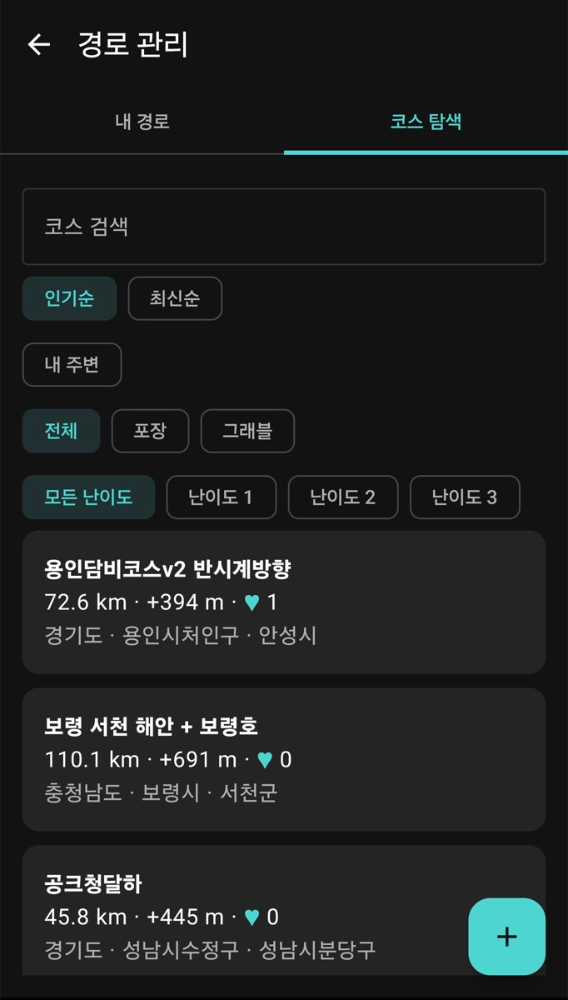
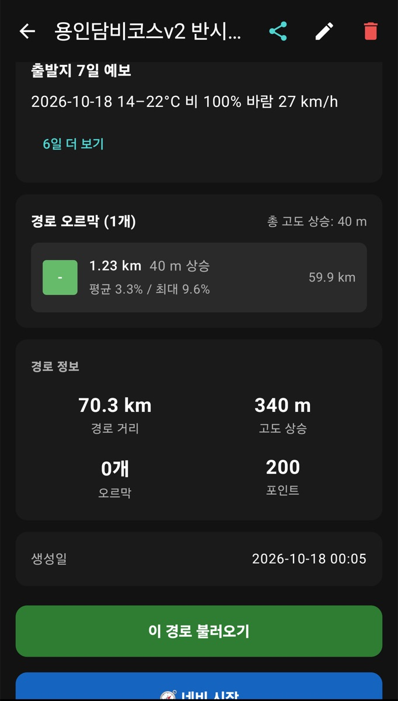
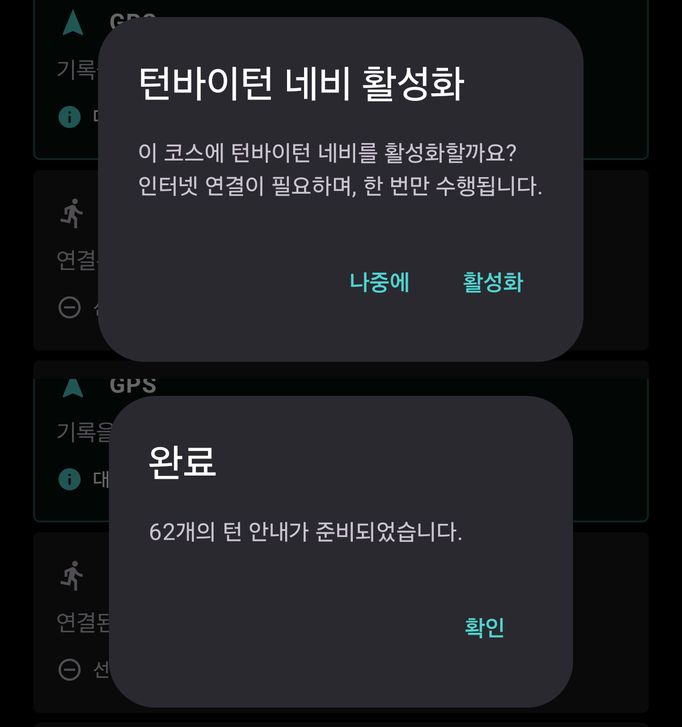
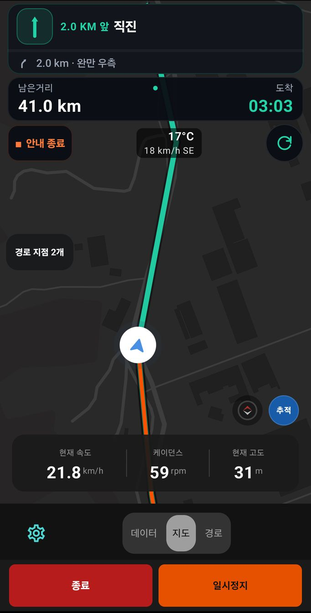

6. 코스와 내비게이션
이 장에서 할 수 있는 것
- GPX 파일을 가져오거나 코스 탐색에서 남이 만든 코스를 찾아 저장합니다.
- 코스를 불러와 지도에 띄우고, 네비 시작으로 턴 안내를 받습니다.
- 오르막에서 남은 거리·고도를 보여 주는 ClimbPro를 씁니다.
경로 보관함
더보기 > 경로 보관함을 열면 경로 관리 화면이 나옵니다. 위쪽 탭은 내 경로와 코스 탐색 두 개입니다. 설정 > 기록/경로/상태 > 경로 관리로도 같은 화면이 열립니다.
따라 하기: GPX 가져오기
- Strava·Komoot·RideWithGPS 같은 서비스에서 코스를 .gpx 파일로 받아 둡니다.
- 경로 관리 > 내 경로에서 오른쪽 아래 GPX 가져오기 버튼을 누릅니다.
- 파일 선택 창에서 .gpx 파일을 고릅니다. 앱이 “업힐 구간 분석 중…”을 표시한 뒤 목록에 추가합니다.
- 목록에는 경로 이름, 만든 날짜, 경로 거리, 고도 상승, 오르막 수가 보입니다.
따라 하기: 코스 탐색
- 경로 관리 > 코스 탐색을 누릅니다.
- 코스 검색에 지역·이름을 넣거나, 인기순 / 최신순, 내 주변, 노면(전체 · 포장 · 그래블), 난이도(모든 난이도 · 난이도 1~3)로 좁힙니다.
- 코스를 누르면 상세 화면이 열립니다.

코스 탐색 — 각 코스에 거리 · 상승 고도 · 좋아요 수와 지나는 지역이 표시됩니다.
코스 탐색에서 코스를 열면 그 코스가 내 경로에도 저장됩니다. 필요 없으면 내 경로 목록에서 삭제하세요. 저장된 경로는 오프라인에서도 쓸 수 있습니다.
화면 읽는 법: 경로 상세

경로 상세 — 맨 아래 이 경로 불러오기는 지도에 띄우기만, 네비 시작은 턴 안내까지 켭니다.
| 구역 | 내용 |
|---|
| 맨 위 아이콘 | 경로 공유 · 이름 변경 · 삭제 |
| 지도 · 고도 프로필 | 전체 코스와 거리별 고도 그래프 (순환 코스면 “순환” 표시) |
| 출발지 7일 예보 | 출발 지점의 날씨 예보. 6일 더 보기로 펼칩니다. |
| 경로 오르막 | 오르막마다 길이 · 상승 고도 · 평균/최대 경사 · 출발점에서의 거리 |
| 경로 정보 | 경로 거리, 고도 상승, 오르막 수, 포인트 수, 생성일 |
따라 하기: 턴바이턴 내비게이션
- 경로 상세에서 네비 시작을 누릅니다. 준비 화면으로 넘어가며 “턴바이턴 네비 활성화 — 이 코스에 턴바이턴 네비를 활성화할까요? 인터넷 연결이 필요하며, 한 번만 수행됩니다.” 창이 뜹니다.
- 활성화를 누릅니다. 준비가 끝나면 “완료 — N개의 턴 안내가 준비되었습니다.”가 나오고, 확인을 누릅니다. 지금 하지 않으려면 나중에.
- 준비 화면의 경로 줄에 코스 이름이 보이는지 확인하고 기록을 시작합니다.
- 기록 중 지도 페이지 맨 위 턴 카드에 다음 회전까지 거리와 방향이 나옵니다. 경로 페이지에는 “턴 안내 사용 중”이 표시됩니다. “경로만 불러온 상태 · 턴 안내 꺼짐”이면 선만 보이고 안내는 없습니다.
- 안내를 끝내려면 지도 페이지의 ■ 안내 종료를 누릅니다. 기록은 계속됩니다.

턴 안내 준비 — 활성화 확인창(위)과 준비 완료 창(아래). 턴 안내 준비에는 인터넷이 필요합니다.

기록 중 지도 페이지 (시뮬레이션 화면) — 맨 위 턴 카드(예: “2.0 KM 앞 직진”)와 그다음 회전, 그 아래 남은거리와 도착 예상 시각이 보입니다.
| 지도 페이지 위치 | 보이는 것 |
|---|
| 맨 위 턴 카드 | 다음 회전까지 거리·방향, 아래 줄에 그다음 회전 미리보기 |
| 그 아래 막대 | 경로의 남은거리와 도착 예상 시각 |
| 왼쪽 위 | ■ 안내 종료 버튼 |
| 가운데 위 | 현재 기온과 바람 |
| 지도 | 파란 화살표가 내 위치, 청록 선이 앞으로 갈 경로, 주황 선이 지나온 길 |
| 아래 칸 | 현재 속도 · 케이던스 · 현재 고도 |
경로에서 벗어나면 경로 이탈 경고가 뜹니다. 안내 방식은 설정 > 화면 > 네비게이션(iOS 설정 > 화면 > 내비게이션 설정, 0장 대응표)에서 바꿉니다.
| 항목 | 설명 |
|---|
| 경로 엔진 — 라우팅 | 길 안내 경로를 휴대폰 안에서 계산합니다. 화면에 엔진 이름이 함께 보이지만 바꿀 필요는 없습니다. |
| 하이브리드 부스트 | 인터넷에 연결되어 있으면 서버에서 경로를 실제 도로에 한 번 더 맞춰 턴 안내를 정확하게 합니다. |
| TTS 음성 · 안내 상세도 | 안내 목소리, 안내 양(최소 / 표준 / 상세) |
| 도로명 읽기 | 회전 안내에서 도로 이름을 읽습니다. |
| 속도 적응 거리 | 빠르게 달릴 때 안내를 더 일찍 합니다(예: 30km/h 이상 +30%). |
| 자동 재탐색 · 이탈 감지 임계 | 경로를 벗어나면 돌아갈 길을 다시 찾습니다. |
| 되돌아가기 FAB | 주행 중 지도에 경로로 돌아가는 버튼을 표시합니다. |
오프라인 지역
설정 > 화면 > 네비게이션 > 오프라인 지역은 인터넷 없이 길 안내 경로를 계산할 때 쓰는 지역 파일(대한민국 중부 · 남부)을 받는 곳입니다.
현재 버전에서는 “영구 오프라인 저장이 허용된 지도 제공자와 이용 조건이 확정될 때까지 지역 다운로드를 사용할 수 없습니다” 안내와 함께 다운로드가 막혀 있습니다. 산간처럼 신호가 약한 곳에 가기 전에는 경로를 미리 내 경로에 저장해 두세요.
오르막 안내 (ClimbPro · PreClimb)
ClimbPro는 오르막에서 “정상까지 얼마나 남았나”를 보여 주는 기능입니다. 기록 중 오르막 페이지에 남은 거리 · 남은 고도 · 경사도와 경사 막대그래프가 나옵니다.
- 경로를 불러온 경우 — 경로의 고도 정보로 오르막을 미리 알고 있다가, 오르막에 들어서면 진행 상황을 보여 줍니다. GPX를 가져오지 않았으면 “GPX 경로를 불러오면 오르막이 표시됩니다”가 보입니다.
- 경로 없이 탈 때(PreClimb) — 현재 위치와 진행 방향을 기준으로 앞쪽 오르막을 찾아 “다가오는 오르막”으로 보여 줍니다. 네트워크가 필요합니다.
| 등급 표시 | 뜻 |
|---|
| 난코스 | 가장 어려운 오르막 (흔히 HC라고 부르는 등급) |
| 상급 · 중상급 · 중급 · 초급 | 길이와 경사에 따라 어려운 순 (Cat 1 ~ Cat 4에 해당) |
| 업힐 | 등급에 들지 않는 짧은 오르막 |
오르막을 다 오르면 “오르막 완료!”와 함께 소요 시간 · 평균 속도 · 획득 고도가 나옵니다. 오르막 진입·완료 소리는 4장 알림음에서 정합니다.
자주 막히는 점
경로를 불러와도 기록 종목은 바뀌지 않습니다. 러닝 코스를 불러왔다면 홈에서 종목이 러닝인지 확인한 뒤 시작하세요.
오르막 페이지가 비어 있으면 경로에 등급이 될 만한 오르막이 없거나, 현재 위치가 경로에서 멀리 떨어진 경우입니다. PreClimb는 데이터 절약에서 네트워크를 막으면 동작하지 않습니다.
코스를 함께 쓰려면 경로 상세의
경로 공유를 누르세요. 그룹 멤버에게 받은 경로는 “받은 경로”에서
받기로 저장합니다. 코스 링크(
https://orider.co.kr/course/…)를 받았다면 링크를 누르면 앱에서 열립니다(
부록 딥링크).